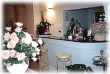
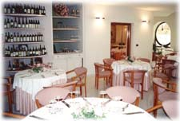

Qualità serietà e convenienza uniti al comfort e ad altri servizi rendono il
Ristorante "Il Gambero" il più interessante
tra i locali della Costa Cilentana.
Il locale è munito di un ampia sala con impianto
di aria condizionata e ricco di tutti i comfort.
Inoltre offiriamo servizio di trasporto dal porto e dalla stazione.
 
Come Raggiungerci
Dalla SS18 si prende l'uscita per Agropoli fino a raggiungere il
Lungomare San Marco di Agropoli dove è situato il Ristorante "Il Gambero"
Lungomare San marco 234, Agropoli (SA) - Tel. 0974.822894
E-Mail: gambero@oneonline.it
Sei il